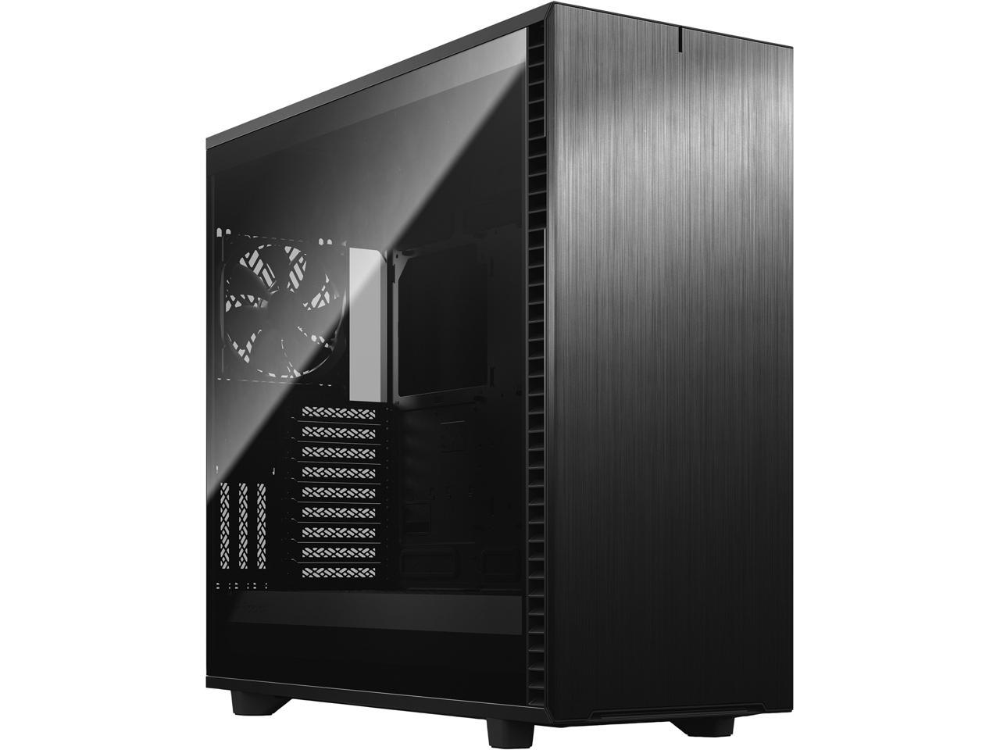

Gencomps
Home
Contact
About
Parts
Cases
CPU's
GPU's
Storage
Cooling
Power Supply
Sign In
Fractal Design Define 7 XL Black Brushed Aluminum / Steel E-ATX Silent Modular Dark Tinted Tempered Glass Window Full Tower Computer Case

$309.00
Dual-layout interior easily fits motherboards up to E-ATX and SSI-EEB
New chassis design opens to fully expose the interior on three sides
Supports up to 18 HDDs and 5 SSD mounts in default Storage Layout
Exceptional water-cooling with radiators up to 480 mm, front or top
Silence-optimized construction with industrial sound-damping
Top panel effortlessly swaps from solid steel to filtered ventilation
Aluminum front panel with dual-handed hinges and magnetic latching
9 x 140 mm or 11 x 120 mm fan positions
3 x vertical slots for use with the Flex VRC riser (sold separately)
Seamless dark-tinted TG panel with tool-less top-latching
Buy
1
2
3
4
5